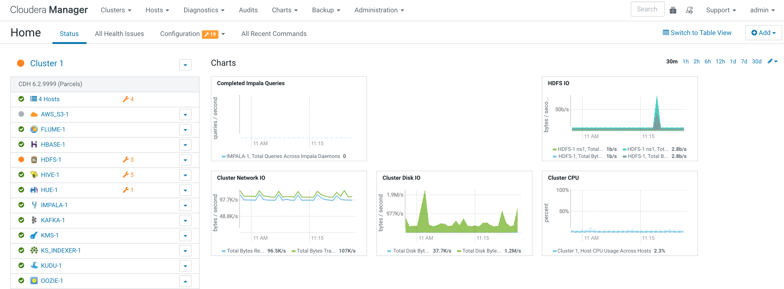
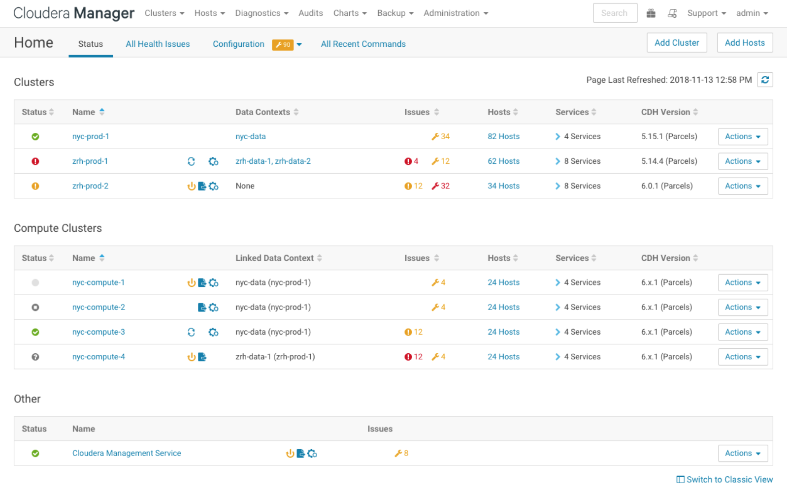

Cloudera Manager Admin Console Home Page
When you start the Cloudera Manager Admin Console, the tab displays. You can also go to the tab by clicking the Cloudera Manager logo in the top navigation bar.
The Status tab has two potential views: Table View and Classic View. The Classic View contains a set of charts for the selected cluster, while the Table View separates regular clusters, compute clusters, and other services into summary tables. You can use the Switch to Table View and Switch to Classic View links on each view to switch between the two views. Cloudera Manager remembers which view you select and remains in that view.


Status
The Status tab contains:- Clusters - The clusters being managed
by Cloudera Manager. Each cluster is displayed either in summary
form or in full form depending on the configuration of the
property.
When the number of clusters exceeds the value of the property, only
cluster summary information displays.
- Summary Form - A list of links to cluster status pages. Click Customize to jump to the property.
- Full Form - A separate section for each cluster
containing a link to the cluster status page and a table containing links to the Hosts page
and the status pages of the services running in the
cluster.Each service row in the table has a menu of actions that you select by clicking
 and can contain one or more
of the following indicators:
and can contain one or more
of the following indicators:Indicator Meaning Description Health issue Indicates that the service has at least one health issue. The indicator shows the number of health issues at the highest severity level. If there are Bad health test results, the indicator is red. If there are no Bad health test results, but Concerning test results exist, then the indicator is yellow. No indicator is shown if there are no Bad or Concerning health test results.  ImportantIf there is one Bad health test result and two Concerning health results, there will be three health issues, but the number will be one.
ImportantIf there is one Bad health test result and two Concerning health results, there will be three health issues, but the number will be one.Click the indicator to display the Health Issues pop-up dialog box.
By default only Bad health test results are shown in the dialog box. To display Concerning health test results, click the Also show n concerning issue(s) link.Click the link to display the Status page containing with details about the health test result.
Configuration issue Indicates that the service has at least one configuration issue. The indicator shows the number of configuration issues at the highest severity level. If there are configuration errors, the indicator is red. If there are no errors but configuration warnings exist, then the indicator is yellow. No indicator is shown if there are no configuration notifications. ImportantIf there is one configuration error and two configuration warnings, there will be three configuration issues, but the number will be one.Click the indicator to display the Configuration Issues pop-up dialog box.
By default only notifications at the Error severity level are listed, grouped by service name are shown in the dialog box. To display Warning notifications, click the Also show n warning(s) link.Click the message associated with an error or warning to be taken to the configuration property for which the notification has been issued where you can address the issue.See cm_mc_managing_services.html#cmug_topic_5.
 Restart
Needed
Restart
Needed Refresh Needed
Refresh NeededConfiguration modified Indicates that at least one of a service's roles is running with a configuration that does not match the current configuration settings in Cloudera Manager. Click the indicator to display the Stale Configurations page.To bring the cluster up-to-date, click the Refresh or Restart button on the Stale Configurations page or follow the instructions in Refreshing a Cluster, Restarting a Cluster, or cm_mc_mod_configs.html#cmug_topic_5_3_2.

Client configuration redeployment required Indicates that the client configuration for a service should be redeployed. Click the indicator to display the Stale Configurations page.To bring the cluster up-to-date, click the Deploy Client Configuration button on the Stale Configurations page or follow the instructions in cm_mc_client_config.html#cmug_topic_5_9_2.
- Cloudera Management Service - A table containing a link
to the Cloudera Manager Service. The Cloudera Manager Service has
a menu of actions that you select by clicking .
- Charts - A set of charts (dashboard) that summarize resource utilization (IO, CPU usage) and processing metrics.
All Health Issues
Displays all health issues by cluster. The number badge has the same semantics as the per service health issues reported on the Status tab.- By default only Bad health test results are shown in the dialog box. To display Concerning health test results, click the Also show n concerning issue(s) link.
- To group the health test results by entity or health test, click the buttons on the Organize by Entity/Organize by Health Test switch.
- Click the link to display the Status page containing with details about the health test result.
All Configuration Issues
Displays all configuration issues by cluster. The number badge has the same semantics as the per service configuration issues reported on the Status tab. By default only notifications at the Error severity level are listed, grouped by service name are shown in the dialog box. To display Warning notifications, click the Also show n warning(s) link. Click the message associated with an error or warning to be taken to the configuration property for which the notification has been issued where you can address the issue.All Recent Commands
Displays all commands run recently across the clusters. A badge indicates how many recent commands are still running. Click the command link to display details about the command and child commands. See also cm_dg_view_running_recent_commands.html#cmug_topic_4_7.Starting and Logging into the Cloudera Manager Admin Console
- Log into Cloudera Manager Admin Console using the credentials assigned by your administrator. User accounts are assigned roles that constrain the features available to you.
 | Note |
|---|---|
You can configure the Cloudera Manager Admin Console to
automatically log out a user after a configurable period of time. See
Automatic Logout. |
Displaying the Cloudera Manager Server Version and Server Time
- Open the Cloudera Manager Admin Console.
- Select .